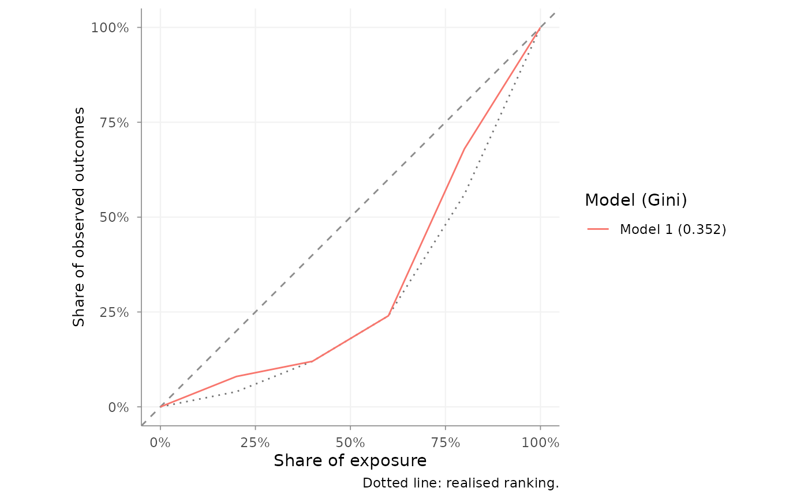
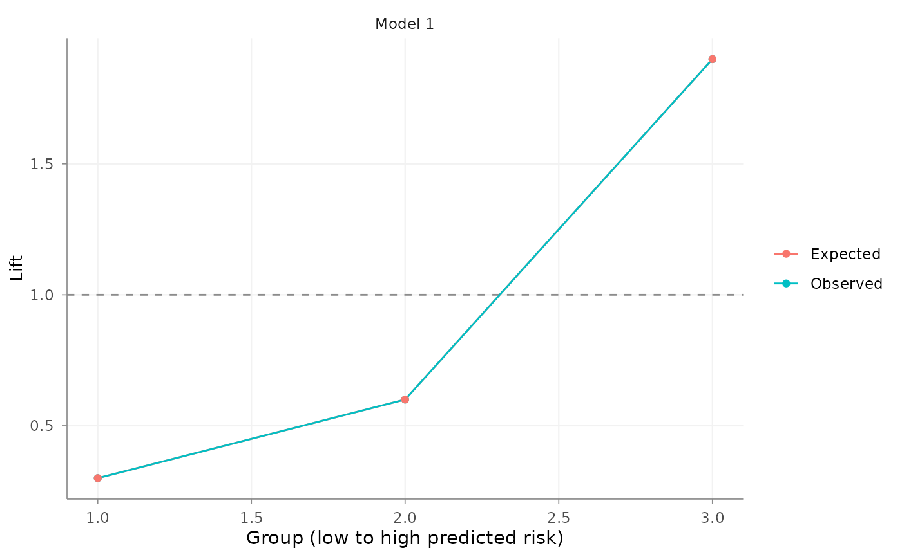

Assess discrimination in insurance pricing
Source:R/model_discrimination.R
discrimination_analysis.RdCompare how fitted models or externally supplied scores rank risk on the same evaluation portfolio. Discrimination measures ranking, not calibration or prediction error.
Usage
discrimination_analysis(
model = NULL,
data = NULL,
observed = NULL,
predicted = NULL,
exposure = NULL,
reference = NULL,
n_groups = 10
)Arguments
- model
A GLM or named list of GLMs with comparable responses and weights.
- data
Evaluation data for the models.
- observed
Non-negative observed totals for the evaluation records.
- predicted
Non-negative predicted totals, or a named list of such vectors.
- exposure
Positive exposure per record. Defaults to one for supplied totals. For models it can be a vector or a column name in
data; by default use exposure from the GLM or the prior weights for mean responses such as average severity. Supply totals, not per-exposure rates.- reference
Optional positive reference totals or a reference GLM for ordered Lorenz curves. Use the same scale and records as the candidates.
- n_groups
Target number of approximately equal-exposure lift groups.
Value
A discrimination_result with summary, concentration,
lorenz, lift and, when requested, ordered_lorenz.
Details
The concentration curve ranks records from low to high predicted total divided by exposure. Its axes are cumulative shares of exposure and observed outcomes. The signed Gini is one minus twice the trapezoidal area under this curve. The classical Lorenz curve ranks by realised outcome per exposure unit. Its Gini is the denominator of normalized Gini, not a feasible predictive benchmark. A zero denominator or zero observed total gives an undefined normalized Gini. Ginis from different cohorts, response scales or aggregation levels need not be comparable.
Lift groups are ordered from low to high risk. A tied score block stays together, so fewer groups may result. Observed and predicted lift divide the respective group rates by the corresponding portfolio rates.
For an ordered Lorenz curve, order by candidate divided by reference prediction; plot cumulative reference predictions against cumulative observed outcomes. A positive relative Gini means that realised outcomes tend to be concentrated where the candidate predicts more relative to the reference. Proportional tariffs give zero. The comparison is directional, not proof of profitability. Scores are rounded to 14 significant digits before checking ties to suppress roundoff from exposure normalisation.
The model interface supports Poisson, quasi-Poisson, Gamma and Tweedie GLMs.
The response totals use the same weighting rules as calibration_analysis().
Mean severity with claim-count weights therefore compares total losses
over exposure measured in claims. Supply complete evaluation records; the
function does not silently discard rows for one model but not another.
References
Frees, E. W., Meyers, G., and Cummings, A. D. (2014). Insurance Ratemaking and a Gini Index. Journal of Risk and Insurance, 81(2), 335–366. doi:10.1111/j.1539-6975.2012.01507.x
Examples
result <- discrimination_analysis(
observed = c(100, 200, 300, 800, 1100),
predicted = c(200, 100, 300, 1100, 800),
reference = rep(500, 5), n_groups = 3
)
result$summary
#> Model Gini Normalized_Gini Relative_Gini Exposure Observed Expected N
#> 1 Model 1 0.352 0.8461538 0.352 5 2500 2500 5
autoplot(result)

autoplot(result, type = "lift")
